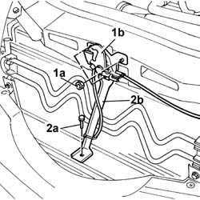
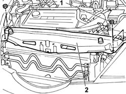
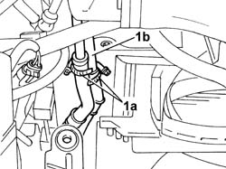
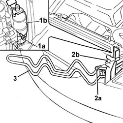

4130B52 HEAT EXCHANGER PIPE - R.R.
- Path
- Procedures > 41 STEERING > 4130 POWER ASSISTED STEERING > 4130B POWER STEERING HYDRAULIC SYSTEM > 4130B52 HEAT EXCHANGER PIPE - R.R.
- Kind
- repair procedure (removal / refitting; the operation number is the code)
- Applies to
- all engines; all production periods
- Interactive page
- https://sloeber94.github.io/elrnDB-lThss/en/#/78806
Applies to: all engines; all production periods
 Removing
Removing
 Refitting
Refitting- Position the vehicle on a lift.
See in Op. 7040D50 ENGINE COMPARTMENT UPPER SOUND INSULATION SHIELD - R.R.
Applies to: engines: 2.0 TB; all production periods
See in Op. 1048A50 air inlet pipe to turbocharger - r + r
See in Op. 1048A21 AIR INLET HOSE FROM INTAKE TO FILTER - R.R.
Applies to: engines: 2.4 20V; all production periods
See in Op. 1048A28 vacuum air circuit resonator pipe - r+r
See in Op. 1048A21 AIR INLET HOSE FROM INTAKE TO FILTER - R.R.
Applies to: engines: 2.4 JTD 10V; all production periods
See in Op. 1048A21 AIR INLET HOSE FROM INTAKE TO FILTER - R.R.
Applies to: engines: 2.4 JTD 20V; all production periods
See in Op. 7055B54 PROTECTION/GUARD under engine - R.R.
See in Op. 1016A10 SOUND-PROOFING COVER - R.R.
See in Op. 1048B44 RIGID air supply PIPE from heat exchanger to intake manifold - R.R.
See in Op. 1048A56 UPPER RESONATOR - R.R.
See in Op. 1048A50 air inlet pipe to turbocharger - r + r
See in Op. 1048A21 AIR INLET HOSE FROM INTAKE TO FILTER - R.R.
Applies to: engines: 3.0 V6, 3.2 V6; all production periods
See in Op. 1048A28 vacuum air circuit resonator pipe - r+r
See in Op. 1048A21 AIR INLET HOSE FROM INTAKE TO FILTER - R.R.
See in Op. 1048A11 Air filter assembly - R.R. for versions with automatic transmission
Applies to: all engines; all production periods
1. Undo the fixing nuts (1a) and remove the bonnet lock (1b) from the housing in the crossmember.
2. Undo the lower nut (2a) and remove the lock reinforcement bracket (2b).

Applies to: all engines; all production periods
1. Undo the retaining bolts.
2. Remove the upper front crossmember.

Applies to: all engines; all production periods
1. Disconnect the two flexible pipes (1a) from the rigid heat exchanger pipes (1b).
- Collect the fluid that comes out of the heat exchanger pipe in a special container and seal the sections of the flexible pipe connected to it.
- Release the air conditioning system pipe from the retaining bands.

Applies to: all engines; all production periods
1. Undo the bolts (1a) fixing the drier filter (1b) to the radiator.
2. Undo the upper bolt (2a) fixing the air duct fastened to the engine radiator (2b).
3. Release the heat exchanger pipe from the duct, then extract the cooling pipe.

Applies to: all engines; all production periods
Refitting
Removing- Position the heat exchanger pipe in the housing on the radiator.
- Correctly reposition the air duct and tighten the bolt fixing it to the radiator.
- Tighten the bolts fixing the drier filter to the radiator.
- Position the air conditioning system pipe securing it to the retaining bands.
- Connect the two flexible pipes to the rigid heat exchanger pipes.
- Fit the upper front crossmember and tighten the fixing bolts to torque.
 | Value - daNm | Fastening | Component | Ø |
|---|---|---|---|---|
. | 0.6 | Bolts | FRONT WING CROSSMEMBER HEADLAMP HOUSINGS | M6 |
- Fit the bonnet lid lock complete with bracket and tighten the nuts fixing it to the upper crossmember and to the lower crossmember.
- Refill the power assisted steering system using the appropriate fluid.
 | Description | Qty. | Component | Type | Classification |
|---|---|---|---|---|---|
. | TUTELA HP 20 | - | POWER ASSISTED STEERING CIRCUIT | Oil | ATF DEXRON III |
- Continue with the bleeding procedure following the instructions given below.
- With the front wheels raised off the ground and the engine switched off, carry out 4 or 5 complete rotations of the steering wheel (left and right).
- Check and, if necessary, top up the power assisted steering fluid level.
- Position the vehicle on the ground and start up the engine.
- Carry out 4 or 5 complete rotations of the steering wheel (left and right).
- If necessary, top up the power assisted steering fluid level.
Applies to: engines: 2.4 20V; all production periods
See in Op. 1048A10 COMPLETE AIR FILTER -R.R.
See in Op. 1048A21 AIR INLET HOSE FROM INTAKE TO FILTER - R.R.
Applies to: engines: 2.4 JTD 10V; all production periods
See in Op. 1048A10 COMPLETE AIR FILTER -R.R.
See in Op. 1048A21 AIR INLET HOSE FROM INTAKE TO FILTER - R.R.
Applies to: engines: 2.4 JTD 20V; all production periods
See in Op. 1048A10 COMPLETE AIR FILTER -R.R.
See in Op. 1048A21 AIR INLET HOSE FROM INTAKE TO FILTER - R.R.
See in Op. 1048A50 air inlet pipe to turbocharger - r + r
See in Op. 1048A56 UPPER RESONATOR - R.R.
See in Op. 1048B44 RIGID air supply PIPE from heat exchanger to intake manifold - R.R.
Applies to: engines: 3.0 V6, 3.2 V6; all production periods
See in Op. 1048A11 Air filter assembly - R.R. for versions with automatic transmission
See in Op. 1048A21 AIR INLET HOSE FROM INTAKE TO FILTER - R.R.
Applies to: engines: 2.0 TB; all production periods
See in Op. 1048A10 COMPLETE AIR FILTER -R.R.
See in Op. 1048A21 AIR INLET HOSE FROM INTAKE TO FILTER - R.R.
Applies to: all engines; all production periods
See in Op. 7040D50 ENGINE COMPARTMENT UPPER SOUND INSULATION SHIELD - R.R.
- Remove the vehicle from the lift.
Topics linked from this page (10)
- 1016A10 SOUND-PROOFING COVER - R.R.
- 1048A56 UPPER RESONATOR - R.R.
- 1048A10 COMPLETE AIR FILTER -R.R.
- 1048A21 AIR INLET HOSE FROM INTAKE TO FILTER - R.R.
- 1048A28 vacuum air circuit resonator pipe - r+r
- 1048A50 air inlet pipe to turbocharger - r + r
- 1048A11 Air filter assembly - R.R. for versions with automatic transmission
- 1048B44 RIGID air supply PIPE from heat exchanger to intake manifold - R.R.
- 7040D50 ENGINE COMPARTMENT UPPER SOUND INSULATION SHIELD - R.R.
- 7055B54 PROTECTION/GUARD under engine - R.R.